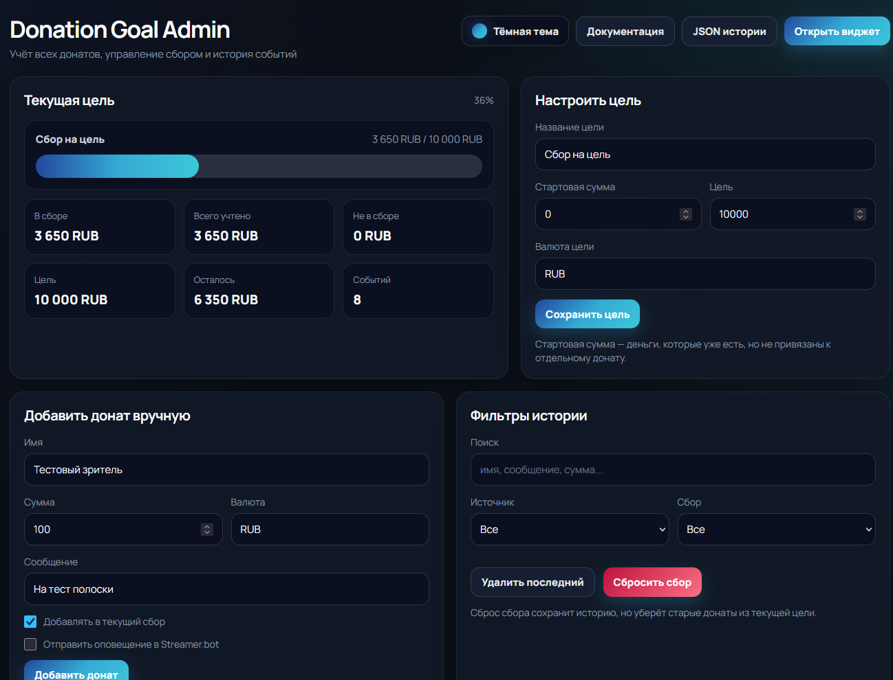
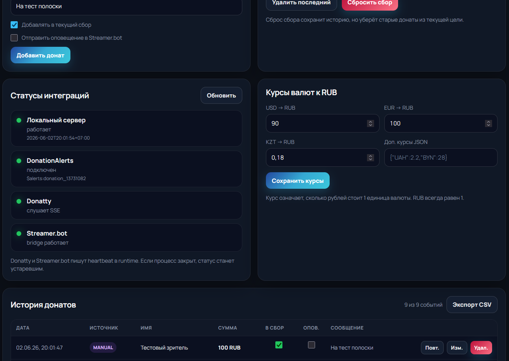
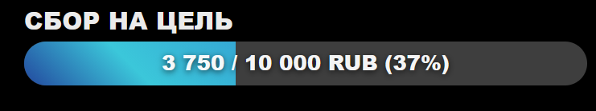
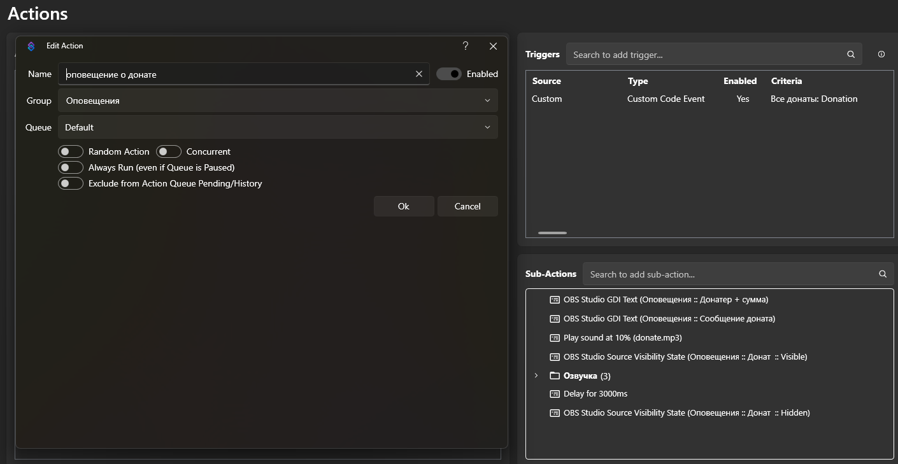
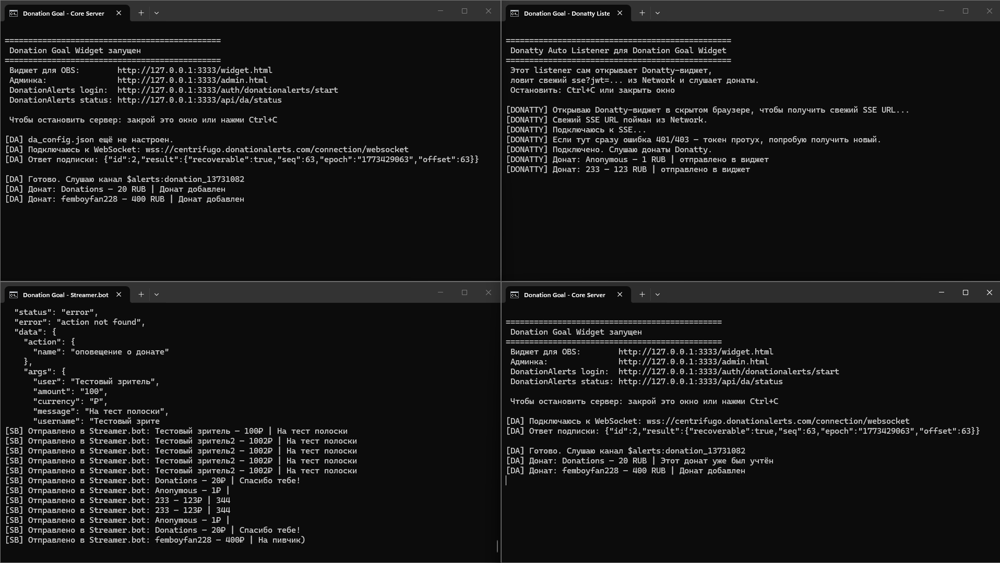
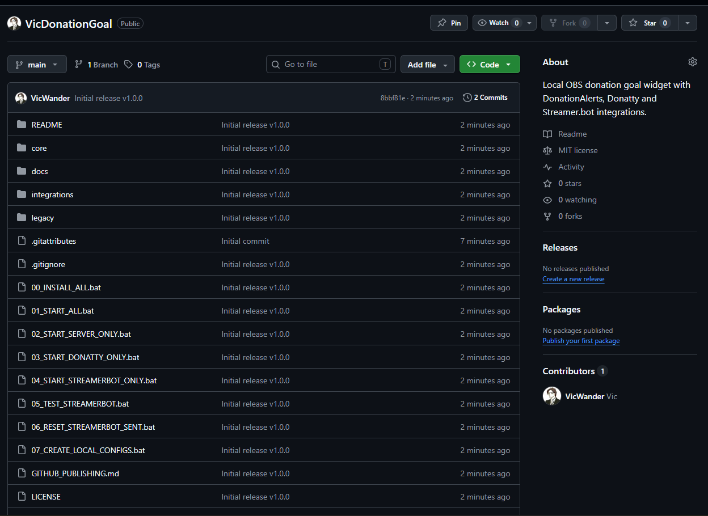

Донаты
Агрегация источников
Донаты из разных сервисов приводятся к единому формату и сохраняются в общей истории.
Проект агрегирует донаты из DonationAlerts и Donatty, ведёт локальную историю событий, отображает кастомный OBS-виджет и передаёт события в Streamer.bot для оповещений.
Задача проекта — заменить набор разрозненных виджетов одной локальной системой для управления донатами на стриме.
Донаты из разных сервисов приводятся к единому формату и сохраняются в общей истории.
Прогресс сбора отображается через Browser Source в OBS и полностью настраивается через CSS.
Проект передаёт данные доната в Streamer.bot, где запускается кастомный action со звуком и текстом.
В админке можно добавлять донаты вручную, редактировать события, экспортировать CSV и управлять целью.
История донатов, состояние цели и курсы валют хранятся локально в JSON-файлах.
Проект вычищен от приватных данных, имеет README, документацию, лицензию и релизный архив.
Система разделена на независимые модули: основной сервер, listener Donatty и bridge для Streamer.bot.
Проект показывает работу с web-интерфейсом, сетевыми протоколами, внешними API и локальным хранением данных.
Основные элементы проекта: админ-панель, OBS-виджет, интеграции, консольные модули и репозиторий.






Проект подготовлен так, чтобы его можно было скачать с GitHub и запустить на Windows через bat-файлы.
v1.0.0.
00_INSTALL_ALL.bat, чтобы установить Python-зависимости и Playwright Chromium.
.example.json.
01_START_ALL.bat и открыть админку /admin.html.
Это не просто учебный скрипт, а маленькое локальное приложение с несколькими слоями и внешними интеграциями.
Есть backend на Python, frontend на HTML/CSS/JS, API и отдельные интеграционные модули.
Используются OAuth, WebSocket, Server-Sent Events и HTTP API Streamer.bot.
Проект решает реальную задачу стримера: единая цель, учёт донатов и кастомные оповещения.